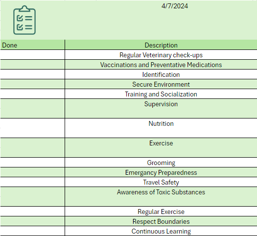

Keep your dogs safe!
Welcome to our guide on dog safety! Whether you're a seasoned dog owner or someone who simply enjoys the company of these furry companions, understanding how to interact
safely with dogs is essential for both your well-being and theirs. Dogs are beloved members of countless households around the world, providing companionship, loyalty,
and joy to millions. However, it's important to recognize that dogs, like any other animals, have their own behaviors, instincts, and boundaries.
We'll cover some fundamental principles of dog safety, including how to approach and interact with dogs, recognizing signs of stress or aggression, and teaching children to
respect dogs' space and needs. By learning these key concepts, you'll not only enhance your own safety but also contribute to positive interactions between humans and dogs
in your community.
So, whether you're encountering a new dog on the street, welcoming a furry friend into your home, or simply looking to deepen your understanding of these amazing creatures,
let's embark on this journey of dog safety together.
Dog Safety Checklist
This checklist provided is a concise yet comprehensive tool designed to help pet owners ensure the safety and well-being of their dogs. It covers essential aspects of
responsible dog ownership, including veterinary care, identification, training, nutrition, exercise, grooming, emergency preparedness, and awareness of potential hazards.
Each item on the checklist serves as a reminder of key practices and considerations necessary for maintaining a safe and healthy environment for dogs. By systematically
addressing each item on the checklist, pet owners can minimize risks and provide their dogs with the care and protection they need to thrive.

Download the file to gain access to the document by clicking on the image
Dog Safety Tips
1) Understanding Dog Body Language
Learn to recognize signs of a dog's comfort, stress, fear, or aggression. This includes body posture, facial expressions, tail wagging, and vocalizations.
2) Approaching Dogs
Always ask the owner for permission before approaching a dog.
Approach slowly and calmly, allowing the dog to sniff your hand before attempting to pet them.
Avoid making sudden movements or loud noises that could startle the dog.
3) Interacting with Dogs
Avoid direct eye contact, as this can be perceived as threatening by some dogs.
Pet the dog gently and avoid touching sensitive areas such as the face, tail, or paws.
Respect the dog's personal space and do not overwhelm them with attention.
4) Supervise Interactions with Children
Teach children how to behave around dogs, including gentle petting and not disturbing them while eating or sleeping.
Never leave young children unsupervised with a dog, no matter how familiar they are with each other.
5) Training and Socialization
Enroll your dog in obedience training classes to teach basic commands and improve their behavior.
Socialize your dog with other dogs and people in a controlled environment to prevent fear or aggression towards unfamiliar individuals.
6) Securing Environment
Ensure that your dog is kept in a secure enclosure or on a leash when outdoors to prevent them from wandering off or getting into potentially dangerous situations.
Keep hazardous items such as toxic foods, chemicals, and small objects out of reach of your dog.
7) Health Care
Schedule regular veterinary check-ups to monitor your dog's health and address any medical concerns promptly.
Keep up-to-date with vaccinations, parasite prevention, and grooming to maintain your dog's overall well-being.
8) Emergancy Preparedness
Familiarize yourself with basic first aid techniques for dogs, including how to stop bleeding, perform CPR, and treat common injuries.
Have a plan in place for emergencies, including the nearest veterinary hospital and contact information for animal control services.
9) Respect Boundaries
Respect the boundaries of other dog owners and their pets by maintaining a safe distance if requested.
If you encounter a stray or unfamiliar dog, avoid approaching them and contact local animal control for assistance.
10) Continuous Learning
Stay informed about dog behavior, training techniques, and safety guidelines through reputable sources such as books, websites, and professional trainers.
Continuously assess and adjust your approach to dog safety based on your experiences and interactions with dogs.
By following this checklist, you can help create a safer and more enjoyable environment for both you and the dogs you encounter in your daily life.